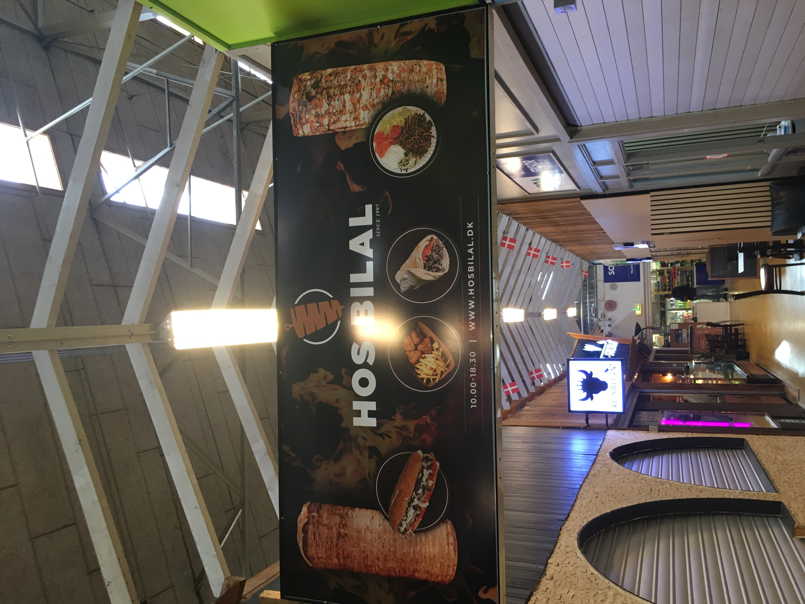

Sted 1: Hos Bilal
Hos Bilal er ikke bare et shawarma-sted, det er en institution i Århus – måske lige så berømt som den lokale busrute til Bazar Vest. Når man træder ind i den hyggelige atmosfære, er der lige så meget plads til din sult som til stedets imponerende akkustik (perfekt til at høre dit eget maveknurren, hvis der er kø). Her får du valget mellem fladbrød og tyrkisk brød – begge solide valg, men vi ved jo godt, at det rigtige valg afhænger af din humør og hvor meget du har lyst til at være mast af fyld. For 70 kr. får du en oksekødsvariant, og for 60 kr. kan du nyde en kyllingeshawarma. Men desværre, selvom smagen er på niveau, virker det som om, at der er sparet lidt på fyldet – som om inflationen har snigløbet shawarmaen, ligesom Rusland har sneget sig ind i Ukraine. Vi savner de store, overdådige portioner, som kunne gøre selv en tyrkisk bedstemor stolt. Brødet, selvom det er hentet frisk fra den lokale bager, kunne godt bruge en tur mere i varmen – ingen vil have lunkent brød til deres shawarma! Samlet set får Hos Bilal en 6/10 – fyldet er desværre ikke nok til at opveje de globale geopolitiske udfordringer og brødets lunkenhed. Men hey, der er altid plads til forbedring, og vi krydser fingre for en fyld-forstærket fremtid!
Fun Shawarma Facts!
- Did you know? The word "shawarma" comes from the Turkish word "çevirme," meaning "turning" – a reference to how the meat is cooked on a rotisserie!
- Shawarma is one of the most popular street foods in the world, especially in the Middle East, but its origins trace back to the Ottoman Empire.
- The largest shawarma ever made weighed over 4,000 pounds! That’s a lot of wraps!